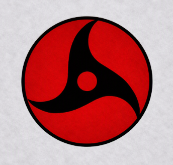

👁 RED EYE (CROW)
Red Eye (Crow)
Transform
Mastery 1
Activates Red Eye, granting a slight speed boost.
Untransform
Mastery 1
Deactivates Red Eye.
Phantom Dash
Mastery 1
Dashes forward; deals
90 damage.
(Knockback)
Distracting Crows
Mastery 25
Launches crows that pursue the enemy.
Deals
132 damage.
(Stun + Knockback)
Nightmare Prison
Mastery 50
Creates an illusion zone; anyone inside is subjected to a genjutsu that deals
185 damage.
(The target cannot be attacked while the illusion is active.)
(Stun)
Requirements
To use the following skills, activate the Red Eye (Crow) and have 75 Mastery in Red Eye (Crow).
Amaterasu Spear
Mastery 75
Throws a black flame spear that deals
173 damage.
(Knockback + Burn)
Crow Flight
Mastery 85
Transforms into crows, allowing flight for
10 seconds.
Amaterasu Slash
Mastery 100
Launches a blast of black flame that deals
178 damage.
(Knockback)
Abyssal Nightmare
Mastery 125
Creates an illusion zone; anyone inside is subjected to a genjutsu that deals
370 damage.
(The target cannot be attacked while the illusion is active.)
(Stun)